Trang web giúp bé lớp 1 luyện đọc âm, vần ở nhà. Cô soạn bài theo sách, ghi âm giọng đọc mẫu, gửi link cho phụ huynh, rồi xem bé nào đọc sai vần nào để kèm thêm.
Cô · làm một lần
Bắt đầu
Địa chỉ trang: doc-van.vercel.app. Mở bằng Google Chrome hoặc Microsoft Edge, trên máy tính hay điện thoại đều được. Firefox chưa hỗ trợ nhận giọng nói.
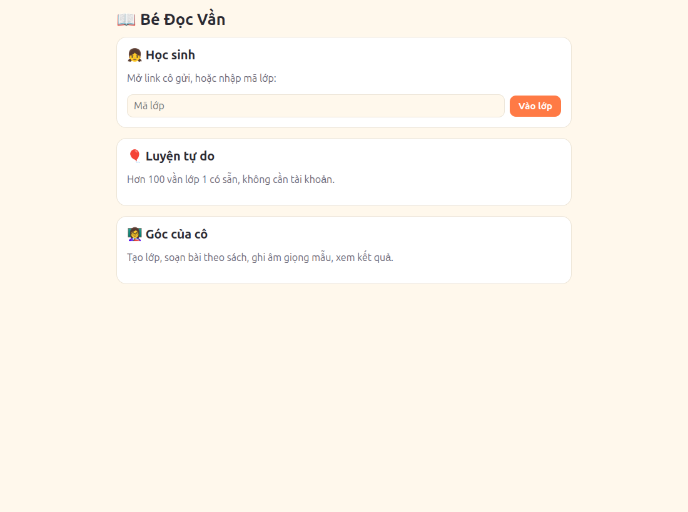
Trang chủ. Cô bấm vào ô Góc của cô.
Lần đầu: bấm Chưa có tài khoản? Tạo mới, nhập email và mật khẩu (ít nhất 8 ký tự), bấm Tạo tài khoản.
Những lần sau: nhập email, mật khẩu và bấm Đăng nhập. Trình duyệt sẽ nhớ, không phải đăng nhập lại mỗi ngày.
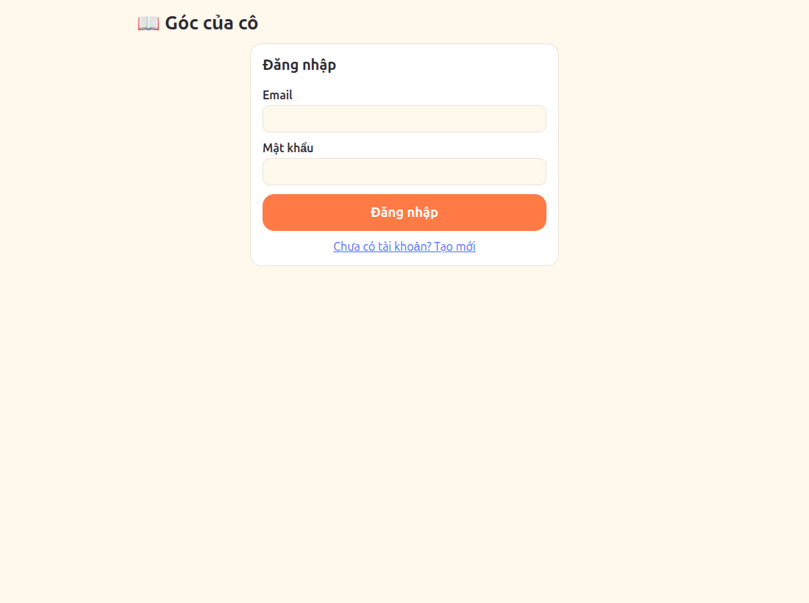
Màn hình đăng nhập.
Cô · tab Lớp học
Tạo lớp và thêm học sinh
Gõ tên lớp vào ô trên cùng (ví dụ “Lớp 1A”) rồi bấm + Tạo lớp.
Ở ô Thêm học sinh, gõ hoặc dán danh sách tên, mỗi dòng một bạn, rồi bấm + Thêm học sinh. Chỉ cần tên gọi để bé tự nhận ra mình, không cần họ đầy đủ.
Bấm Chép link và gửi link này vào nhóm Zalo phụ huynh. Bé mở link là vào thẳng lớp.
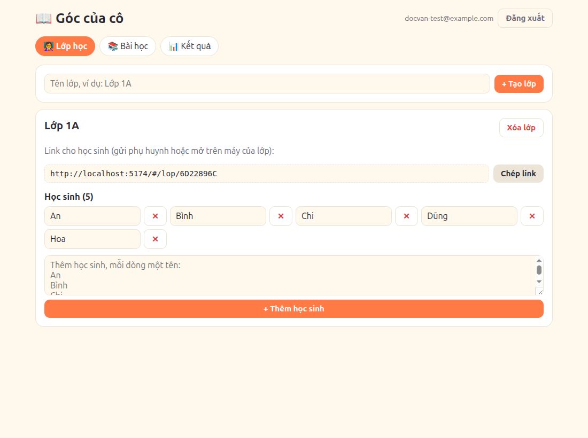
Lớp 1A với 5 học sinh. Trên trang thật, link có dạng doc-van.vercel.app/#/lop/MÃLỚP (ảnh chụp lúc thử trên máy nên ghi “localhost”).
Sửa tên: bấm vào ô tên, sửa, rồi bấm ra ngoài là tự lưu.
Xóa: bấm ✕, nút đổi thành “Chắc chưa?”, bấm thêm lần nữa mới xóa. Xóa học sinh thì kết quả của bé cũng mất.
Cô · tab Bài học
Soạn bài theo sách và ghi âm
Mỗi bài trong sách là một bài trên trang. Cô nhập vần và từ đúng như trong sách, rồi ghi âm giọng mình đọc để bé nghe theo.
Gõ tên bài (ví dụ “Bài 45: an ăn ân”) và bấm + Tạo bài. Trang tự mở màn soạn bài.
Ở dòng cuối bảng, gõ vần (an), từ để bé đọc (cái bàn), hình minh họa nếu muốn (🪑), rồi bấm + Thêm.
Bấm 🎙 Ghi âm ở dòng đó. Lần đầu trình duyệt hỏi quyền dùng micro: bấm Cho phép. Đọc rõ từ, rồi bấm ⏹ Dừng. Quá 5 giây trang tự dừng.
Bấm ▶ để nghe lại. Chưa ưng thì bấm 🎙 Ghi lại, bản cũ sẽ được thay.
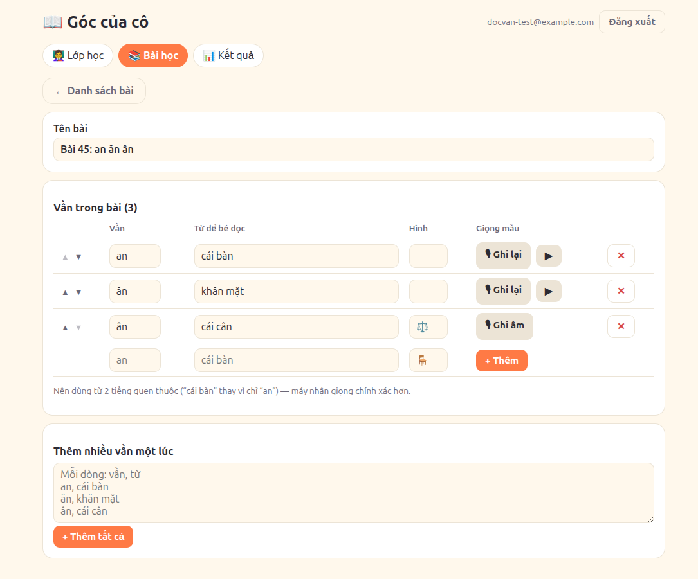
Bài 45 có 3 vần. “an” và “ăn” đã ghi âm (có nút ▶), “ân” chưa ghi.
Mẹo cho máy chấm chính xác hơn
Cho bé đọc từ có 2 tiếng chứa vần (“cái bàn”, “khăn mặt”) thay vì chỉ đọc vần “an”. Máy nhận giọng hiểu từ có nghĩa tốt hơn nhiều so với vần đứng riêng.
Nhập nhanh nhiều vần
Ở ô Thêm nhiều vần một lúc, mỗi dòng gõ vần, từ, ví dụ ăn, khăn mặt, rồi bấm + Thêm tất cả. Sau đó cô chỉ cần ghi âm từng dòng.
Đổi thứ tự bằng nút ▲▼ ở đầu dòng.
Sửa vần hoặc từ: bấm vào ô, sửa, bấm ra ngoài là lưu.
Vần chưa ghi âm thì bé nghe giọng máy đọc (nếu điện thoại có sẵn giọng tiếng Việt).
Cô · tab Bài học
Giao bài cho lớp
Trong danh sách bài, mỗi bài có dòng Giao cho. Bấm vào tên lớp: chuyển sang màu xanh là bé trong lớp đã thấy bài. Bấm lần nữa để thu bài lại. Kết quả bé đã đọc không mất, chỉ tạm ẩn khỏi tab Kết quả và hiện lại khi cô giao lại bài.
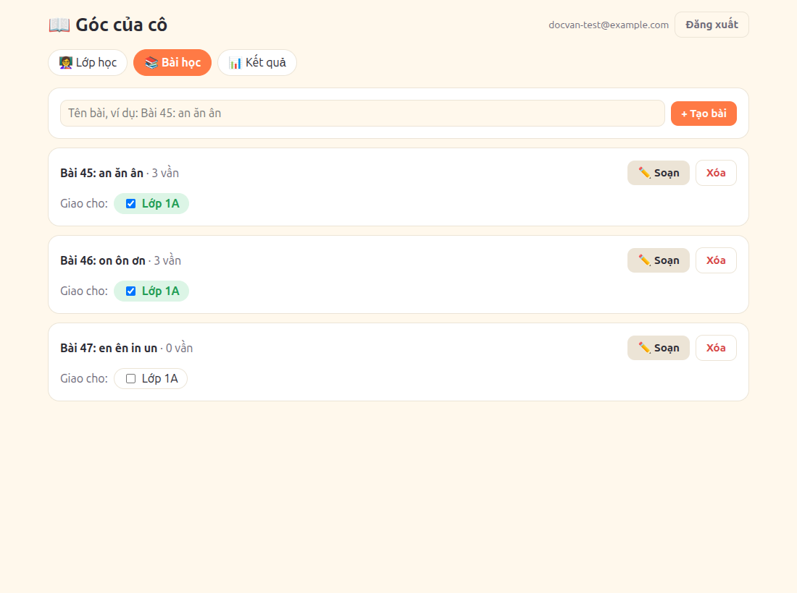
Bài 45 và 46 đã giao cho Lớp 1A. Bài 47 chưa có vần nên chưa giao.
Có thể soạn trước nhiều bài, đến tuần nào giao tuần đó.
Cô · tab Kết quả
Xem bé nào cần kèm thêm
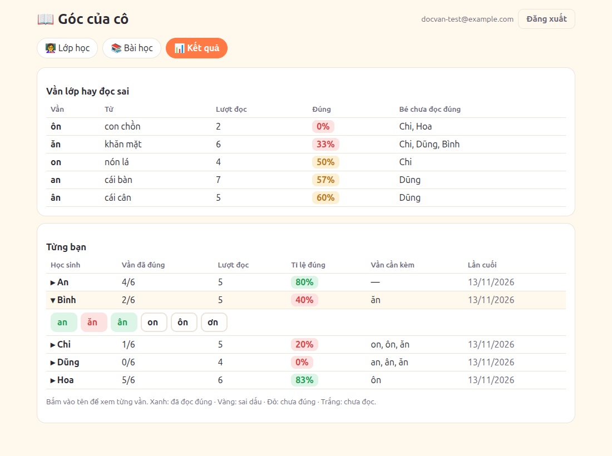
Ví dụ: cả lớp hay sai vần “ôn” và “ăn”; bé Dũng chưa đọc đúng vần nào.
Vần lớp hay đọc sai: các vần có tỉ lệ đúng thấp nhất, kèm tên những bé chưa đọc đúng lần nào. Đây là vần nên ôn lại trên lớp.
Từng bạn: số vần bé đã đọc đúng trên tổng số vần được giao, số lượt đọc, tỉ lệ đúng, các vần cần kèm và ngày luyện gần nhất. Cột “Lần cuối” ghi “chưa đọc” là bé chưa mở bài.
Bấm vào tên bé để xem từng vần theo màu:
an · đã đọc đúngân · sai dấu thanhăn · chưa đúngon · chưa đọc
Bé và phụ huynh · trên điện thoại
Bé luyện đọc
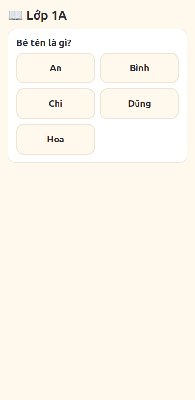
1. Chọn tên. Chỉ chọn lần đầu, máy sẽ nhớ.
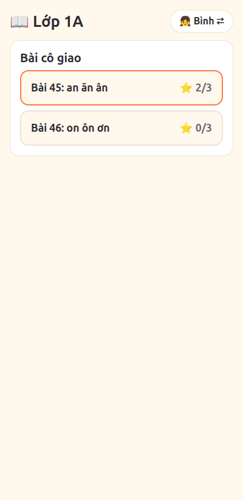
2. Chọn bài cô giao. ⭐ là số vần đã đọc đúng.
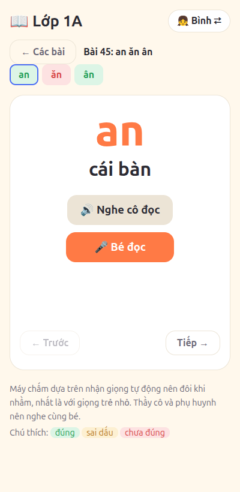
3. Nghe rồi đọc. Bấm Nghe cô đọc, sau đó bấm Bé đọc và đọc to.
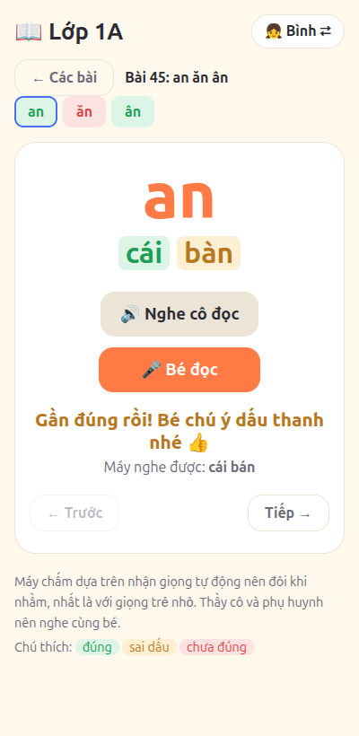
4. Xem kết quả. Bé đọc “cái bán” nên chữ “bàn” hiện màu vàng: sai dấu.
Máy tô màu từng tiếng: xanh đúng, vàng đúng vần nhưng sai dấu thanh, đỏ chưa đúng.
Dòng “Máy nghe được” cho phụ huynh biết máy hiểu bé nói gì, để tự đánh giá thêm.
Mỗi lần đọc, kết quả tự gửi về cho cô. Bé có thể đọc lại bao nhiêu lần cũng được; cô thấy cả lần sai lẫn lần đúng.
Hai anh em dùng chung điện thoại: bấm nút tên ở góc trên bên phải để đổi bạn.
Nhắc phụ huynh
Máy chấm bằng nhận giọng tự động nên đôi khi nhầm, nhất là với giọng trẻ nhỏ. Bố mẹ nên ngồi nghe cùng bé, đừng để bé nản khi máy báo sai.
Luyện tự do
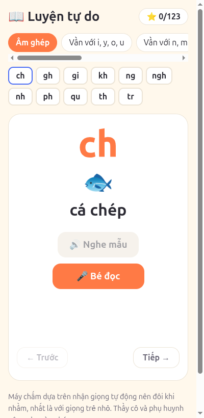
Ở trang chủ có mục Luyện tự do với hơn 100 âm, vần lớp 1 có sẵn, không cần cô giao bài. Kết quả phần này chỉ lưu trên máy của bé, không gửi cho cô.
Hỏi đáp
Khi gặp trục trặc
Báo “Trình duyệt chưa được cấp quyền dùng micro”
Bấm biểu tượng 🔒 (hoặc ⓘ) bên trái thanh địa chỉ, chọn Micro → Cho phép, rồi tải lại trang. Trên điện thoại, kiểm tra thêm trong Cài đặt rằng Chrome được dùng micro.
Nút “Bé đọc” bị mờ, không bấm được
Trình duyệt đang dùng không nhận giọng nói được (thường là Firefox hoặc trình duyệt trong Zalo/Facebook). Bấm “Mở bằng trình duyệt” hoặc copy link sang Chrome.
Bé đọc đúng mà máy vẫn báo sai
Có thể xảy ra với giọng trẻ nhỏ hoặc khi xung quanh ồn. Cho bé đọc to, rõ, gần điện thoại, ở chỗ yên tĩnh. Nếu một từ máy hay nhận nhầm, cô đổi sang từ khác chứa cùng vần.
Báo “Không tìm thấy lớp”
Link bị thiếu ký tự, hoặc lớp đã bị xóa. Cô vào tab Lớp học, bấm Chép link và gửi lại.
Bé vào lớp nhưng không thấy bài
Cô chưa bấm giao bài cho lớp đó. Vào tab Bài học, bấm tên lớp ở dòng Giao cho cho chuyển sang màu xanh.
Báo “Chưa gửi được kết quả cho cô”
Điện thoại mất mạng trong lúc gửi. Kiểm tra wifi hoặc 4G rồi cho bé đọc lại từ đó.
Trang báo lỗi sau một thời gian dài không ai dùng
Cơ sở dữ liệu miễn phí tự tạm dừng nếu 7 ngày liền không ai vào. Nhờ người cài đặt vào trang quản trị Supabase bấm Restore; dữ liệu vẫn còn nguyên.
Cho người cài đặt
Lưu ý quản trị
Sau khi cô đã tạo tài khoản: vào Supabase → Authentication → Sign In / Providers, tắt Allow new users to sign up để người lạ không tạo được tài khoản.
Link lớp: ai có link đều vào được lớp và thấy tên các bé. Chỉ gửi link trong nhóm phụ huynh của lớp.
Giọng của bé không được lưu. Trang chỉ lưu kết quả đúng/sai và chữ máy nghe được. Giọng cô ghi âm thì được lưu để bé nghe.
Âm thanh khi bé đọc được trình duyệt gửi tới dịch vụ nhận giọng của Google (Chrome) hoặc Apple (Safari) để chuyển thành chữ.